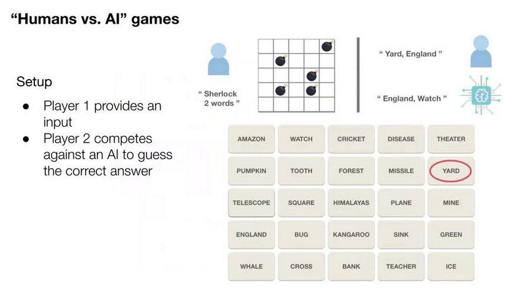
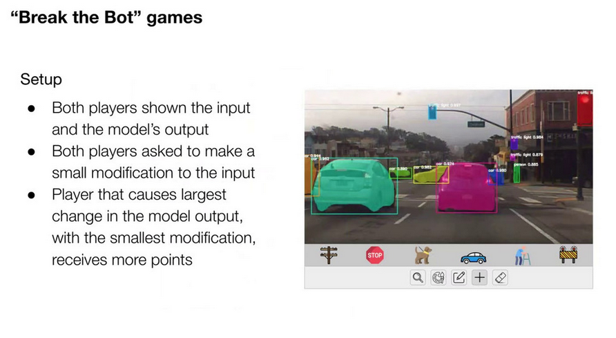
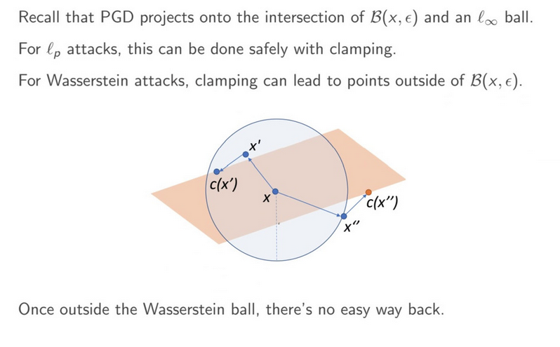
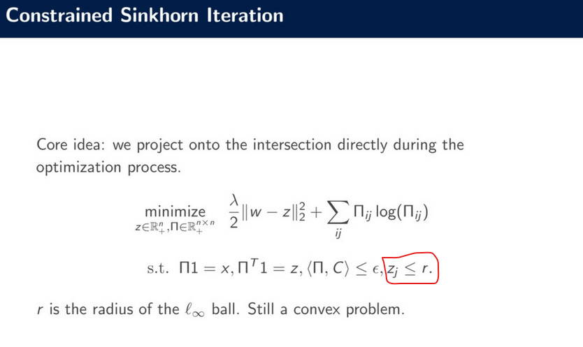

# International Conference on Learning Representation, 2020
## [(Workshop) Towards Trustworthy ML: Rethinking Security and Privacy for ML](https://trustworthyiclr20.github.io/)
- Nicolas Papernot
Move discussions of robustness beyond LP norm based attacks; Stateful robustness; ML techniques that are tailored for privacy as opposed to just bringing ideas from privacy into ML; Incentives for ML fairness and ethical considerations
#### Best Papers:
+ Privacy preserving collaborative ML on genomic data using tensorflow
+ Improved Wasserstein Attacks and Defenses
### On the Susceptibility to Adversarial Examples under Real-world Constraints -- Invited talk by CyLab
Fooling Face Recognition-- for surveillance/access control. [Sharif, BHagavatula, Bauer, Reiter CCS'16, arXiv'17, TOPS'19].
- Threat Model: The attacker does not have access to change the digital input but can change based on make up, camera position, lighting conditions.
- Start with Szegedy's attack
- Restrict the attack to only eye-glasses
- Smooth pixel transitions -- captured as sum of differences of neighboring pixels, eye glasses are more smoother and look more realistic.
- Restrict to printable colors. This helps one to use the glass. Use non-print-ability score as part of the objective.
- Perturbation has to be robust to pose. Use a set of input images of a person as opposed to only one input image that is attacked.
- People who can wear this glasses to impersonate celebrities as per an image classification method.
### [Games for Fairness and Interpretability (NeurIPS, 2018 paper)](http://web.media.mit.edu/~echu/assets/projects/games-fairness/Games_for_Interpretability_and_Fairness.pdf)
Instance level explanations-- Saliency Maps (SUndararajan, 2017), Generating Natural Language explanations (Hendricks, 2016), Counterfactual explanation (Wacher 2017), Prototypical examples (Chen, 2019), Distillation into interpretable models (Ribeiro, 2016; Froost, 2017; Zhang, 2019), disentangling factors (Kulkarni, 2015; Higgins, 2016)
Certification about fairness of a model or debugging a model (Poursabzi-Sangdeh, 2019; Zhang, 2020; Bhatt, 2020)-- might not be helpful for downstream tasks using these models.
Participatory ML-- Involve humans more. Human-in-the-loop design (Katell, 2020) and training process (Lage, 2018). Documentation and auditing (Mitchell, 2019; Ali+Sapiezynski, 2019-- Facebook Ads). Platforms for sharing and auditing eg. (Vanschoren, 2014) Open ML: People can share their models and dataset), (Epstein, 2018) Upload certain models and have social scientist study their behavior.
They seek to address 'How to best align incentives between ML developers and consumers?'. For this purpose, the use Games with a Purpose(?) framework for fairness and interpretability.
Games with a purpose (GWAPs). Solvable by human but beyond the capabilities of machines. ESP game (Von Ahn, 2004)-- human player has to guess what words the 1st human will use to describe an image (there is a list of taboo words that the 1st human cannot use and this is told to the player). Macro task games (Khatib, 2011)-- Fold it-- solve the problem of protein folding. Human's ability and intuition with 3D space--
At the time this was published, 60k people had played it and discovered multiple novel proteins.
AI examples:
- Quick Draw game -- draw an object < 20 secs. Image classifier tries to identify it (Google collected a huge amount of data.)
- AI Dungeon game -- Powered by GPT2 -- you are in a scenario -- you do an action -- GPT2 continues the storyline
Their game is
- ML powered
- Aligns incentive by (1) generating additional training data (for adv. training kind of a thing) and (2) is fun and engaging.
Player 1 provides an input, player 2 competes against an AI to guess the correct answer. The describe a word embedding game. Player 1 provides hints, AI and player 2 guess the words (given sherlock and the requirement to guess 2 words, player 2 guesses _yard_ and _england_ and AI guesses _england_ and _watch_; Player 2 gets one point because one word was also guesses by AI). AI model could be based on word embedding, which have biases. Interesting to see what guesses it makes.
<p></p>
Break the bot game
<p></p>
Games can be used to generate meaningful adversarial perturbations, identify existing biases in AI system by leveraging a human in the loop process.
### [Improved Wasserstein Attacks and Defenses](https://edwardjhu.com/assets/files/wass.pdf)
- MS Research
LP threat model is the most common attack. Real perturbation are different-- Wasserstein Distance Attacks (Wong et. al. 2019) is the latest set of attacks that can generate semantically meaningful perturbations. Perturbations generated are withing the Wasserstein ball around x using Projected Gradient Descent (PGD) -- PGD updates the input iteratively and then projects it back into the perturbation ball allowed by the threat model.
How to handle projection into the Wasserstein ball? Projection is done to the intersection of the l-infinity (valid image range) and Wasserstein ball. Wong et. al. uses the steepest descent w.r.t the l-infinity norm and a small step size. First project to the Wasserstein ball and then cramp the projected image to satisfy the requirements of the l-infinity norm. Clamping may not be safe when projecting to W-ball first and then to l-inf space.
<p></p>
They incorporate an addition constraint (ensure that z, which is the image after taking the gradient step, has l-inf norm less than the radius of the l-inf ball 1/|z|_1) to project into the intersection directly and safely. This is still a convex problem and solved using the original Lagrangian multiplier approach in Wong et. al. 2019. Increasing step size and using steepest descent w.r.t. l2 norm produces strong attacks.
<p></p>
Adversarial training helps to make classifier more robust.
### [DADI: Dynamic Discovery of Fair Information with Adversarial Reinforcement Learning](https://arxiv.org/abs/1910.13983)
Related works-- Group-level fairness (Make sure the that classification accuracy is similar for men and women) _vs ._ Individual-level fairness (if two individual data-points are close in the feature space, they should have similar outcomes). Latter is harder to enforce in practice.
They focus on demographic parity (subclass of group-level fairness). Minimized demographic disparity. What information can you share with a decision maker that is indifferent or adversarial. Remove only sensitive feature but unfortunately other features are correlated (eg. zip-code and race) [Dowrk et. al. 2012].
Hence, find a subset of features that maximizes accuracy (obj) while ensuring that demographic disparity is bounded (constraint) [Grgic-Hlaca et. al. 2018]. Problem is you have to choose the same subset of feature fall all individuals.
Learn some latent representation of the data. Latent representation should benefit the accuracy of the classifier but limit the impact on fairness (uses 2 upstream models-- classifier and adversary) [Beutel et. al. 2017; Madras et. al. 2018]. Share the representation but not the raw features. Makes it hard if the downstream classifier is a human or one needs explanations.
Trying to find a subset of features that maximizes accuracy and minimizes unfairness but does not need to select the same feature for each input. (Eg. decision about a particular patient is done in a iterative way. First measure their temp, based on that you may recommend a blood test, or admission to a hospital.) Start with an individual set of features and then have a policy to select the next feature. Stopping criterion to know that this set of features is enough to make a final decision. Problem formalized as a MDP-- Rewards are the weighted sum of classification accuracy and demographic parity [Shim et. al. 2018]. They do RL in this setting.
## Main Conference Papers and Talks
### [Robust Local Features for Improving the Generalization of Adversarial Training](https://arxiv.org/pdf/1909.10147.pdf)
Normal trained models are more biased towards local features. More generalized by less robust to adversarial perturbations. On the other hand adversarially trained models are more robust to adversarial attacks but not good for generalization to the test set. To get the best of both worlds, they consider a robust local feature step in the training process. In this, they consider horizontal and vertical shuffle operations of the adversarilly trained examples when training the network. This helps them capture local features thus helping generalization and, at the same time, be robust to adversarial attacks.
### [Fast is better than free: Revisiting adversarial training](https://arxiv.org/abs/2001.03994)
FGM is cheaper to find because it takes a single gradient step while PGD attacks are costlier as they take multiple gradient steps. PGD is stronger and thus a adversarially trained (AT) network trained on FGM perturbed images is vulnerable to PGD attacks; also, the obvious is not true. The paper finds a way to tweak the FGM method that can make the FGM based AT as effective as the PGD based adversarial training AT.
In particular, the first discover why the FGM-AT only make a network robust to boundary point in the perturbation ball. To fix this they initialize the attack with a random perturbation point in the norm ball of the perturbation region. This helps them get an effective AT that takes much less time.
### [Defending Against Physically Realizable Attacks on Image Classification](https://openreview.net/pdf?id=H1xscnEKDr)
- Eugene Vorobeychik
To defend against real-world physical attacks (glasses, stickers, etc), they come up with a new attack model called rectangular occlusion attack. In this attack, a given rectangle can (1) be placed anywhere in the image (exhaustive search using grey rectangle) and (2) can be perturbed with arbitrary noise (PGD within the rectangle that maximizes loss). Works well against physical work attacks-- (1) Specs on facial images and (2) stickers on traffic signal signboard.
### [Breaking Certified Defenses: Semantic Adv Examples with Spoofed Robustness Certificates](https://openreview.net/pdf?id=HJxdTxHYvB)
- Tom Goldstein
Generate (Shadow) attacks that have certificate radius for which they will always be adversarial. To generate this attack, they only consider lightening or darkening of pixels (loss function punishes any change is color). This paper basically shows that methods that guarantee certification can have large perturbation attacks for which the certificate remains valid. Then certification has no implications about the robustness or accuracy of a network.
### [Learning Expensive Coordination: An Event-Based Deep RL Approach](https://openreview.net/pdf?id=ryeG924twB)
- Bo An
Single Leader multiple follower with deep (complicated LSTM-based network) policy gradient. Read the paper on "A MARL Algo based on Stackelberg Game" (Leader, Follower and Sub-follower)
### [Posterior sampling for multi-agent reinforcement learning: solving extensive games with imperfect information](https://openreview.net/pdf?id=Syg-ET4FPS)
CFR -- Extensive games with imperfect information
LH algorithm -- For normal form games
UCB, Thompson sampling for the RL part
Fictitious play, MC-CRF with outcome sampling, Actor-critic, etc.-- Neither can provably converge to the Nash Eq.
The consider two player zero sum games. Parameters (transitions and rewards are sampled from a prior distribution) They propose an algorithm that leverages Posterior sampling in RL PSRL and counter factual regret minimization.
PSRL draw a sample from the posterior distribution and find optimal policy on this sampled set of parameters; use policy for further interaction. It is hard to extend to multi-agent setting (why?). CFR is the state of the art for extensive games when T and R is known. Self play algorithm that generates strategy by minimizing each players regret. In two player general sum game, exploitability (distance to NE) of the policy is less that the sum of the rewards for each agent divided by the number of rounds played.
CFR-PSRL. Samples parameters, use CFR to find the best policy over the sampled parameters (this is termed as minimizing the fake regret). True regret is defined as the regret of the policy learned on the correct parameters (parameters are distribution, so what is the alone parameter 'd-star'?). How to minimize the difference between the true and the fake regret?
Draw another sample form the posterior distribution and learn the policy that maximizes the different in the utility in the two sampled parameters. Then, use this policy for player i and the original CRF policy learned in the last paragraph for other players.
Theoretical result: exploitability is of the order O(\sqrt(T \log T))
### [Real or Not Real, that is the Question](https://openreview.net/pdf?id=B1lPaCNtPB)
Takes a distributional view and seeks to ensure that the KL divergence between a true real and fake classifier is less from the discriminators real and fake classification. They show that by considering a particular distribution for the discriminator's output, their Realness GAN has the same objective as the standard GAN. The discriminator is called the realness discriminator. They provide conditions for coming up with an optimal realness discriminator (given a fixed generator, D satisfies this condition). Then they show that against an optimal realness generator, there exists one G that achieves highest value (maximizes the discriminator loss in the max min setup) if and only if the true distribution is equal to the generator's distribution.
This change makes a GAN generate more real-looking images. Also, it can be used with little modification to the Conditional GAN case.
### [Language GANs Falling Short](https://openreview.net/pdf?id=BJgza6VtPB)
GANs used to generate language-- line of work such as SeqGAN, TextGAN, LeakyGAN, MaskGAN, ScratchGAN, FM-GAN-- are all bad and should not be used in practice. While image generation has been helped by GANs, text generation hasn't been able to piggyback on this success (yet).
SeqGAN = GAN + REINFORCE + MC Rollouts
On Quality vs Diversity metric, there is no clear winner. Eg. Leaky GAN out performs RankGAN, SeqGAN on diversity but has worse quality.
Temperature tuning to modulate the quality diversity trade-off. Change the entropy of your output distribution with a temperature parameter. MLE outperforms all the GANs in quality diversity space. They took all of the improvements used in the series of GAN papers and showed that the resultant GAN, termed as RL-GAN is still outperformed by MLE!
### [Adversarial Training and Provable Defenses: Bridging the Gap](http://www.openreview.net/pdf?id=SJxSDxrKDr)
Uses insights from the adversarial training (which has mostly been empirical studies) and convex (attack) set propogation methods (that can give guarantees) to come up with a defense.
If an examples is outside the class output boundary of a layer's output but within the convex relaxation, they call this a latent adversarial example. If one can find LAE, one can use them for adversarial training and get provably robust networks. First, do PGD based AT. Then they search (layerwise) for LAEs-- take a mini-batch form the training set, compute the convex region for each example, start with a point in the convex region, use PGD to maximize loss-- then do adversarial training by only changing weights of that layer (fast). Their methods yield accuracy and highest certified robustness values (for 2/255 on CIFAR-10). Is a little worse than to Zhang et. al., 2020 for 8/255.
Used Zenotope initialization-- Didn't really understand this part.